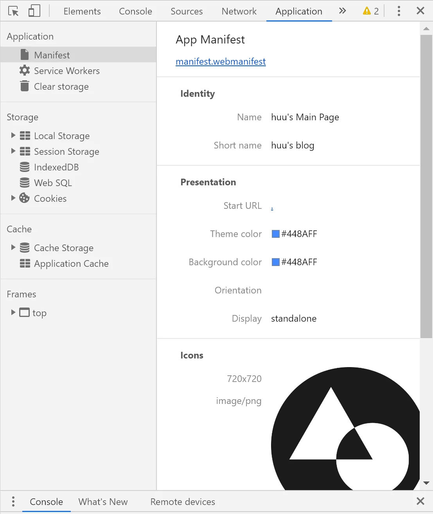
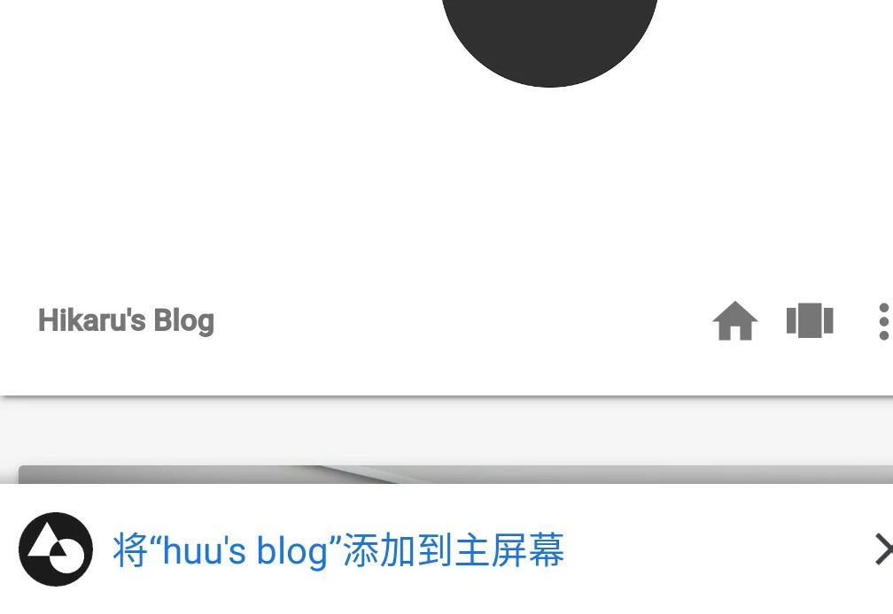

为本站添加A2HS

- huuhghhgyg
- 3 min read

终究止不住折腾，终于还是把卡住很久的这个功能做出来了。
🔗参考链接
manifest的设置
一开始的时候瞎瞄两眼介绍，就天真地以为只要manifest.json或者manifest.webmanifest这个文件存在就好了，结果后来慢慢了解发现还有事呢..反正让它跑起来再说…
不管怎么说，先把manifest.webmanifest写好 (当然你写manifest.json也是可以的，只不过时改了一下后缀名而已，内容相同，看哪个顺眼就用哪个)
那既然要这个文件，就先找最简单的抄了一个，内容如下(来自Mozilla A2HS demo)
1{
2 "background_color": "purple",
3 "description": "Shows random fox pictures. Hey, at least it isn't cats.",
4 "display": "fullscreen",
5 "icons": [
6 {
7 "src": "icon/fox-icon.png",
8 "sizes": "192x192",
9 "type": "image/png"
10 }
11 ],
12 "name": "Awesome fox pictures",
13 "short_name": "Foxes",
14 "start_url": "/pwa-examples/a2hs/index.html"
15}
反正这些属性会英文的都看得懂，照着改就是了。值得一提的有两个属性:
icons:这个属性我觉得其实挺狗的，按照 Google Developers 上面的要求，至少要有192x192和512x512两种尺寸的图标。反正那个时候我被hexo坑住了，以为这是硬性规定，所以就用格式工厂强行转化出了这两种尺寸的图标。后来发现并不是这样，因为我现在的icons属性内容如下:(此处隐去文件目录) 所以应该是最好这么做,让浏览器有缩放的空间，因为 Google Developers上有这么一句话1 "icons": [{ 2 "src": "~.png", 3 "sizes": "720x720", 4 "type": "image/png" 5 }, 6 { 7 "src": "~.png", 8 "sizes": "192x192", 9 "type": "image/png" 10 } 11 ],成功：包括192x192像素图标和512x512像素图标。Chrome会自动缩放设备的图标。如果您希望缩放自己的图标并将其调整为完美像素，请以48dp的增量提供图标。(来自机翻)
start_url:这里参考了一下友链中的网站，发现了他的manifest.webmanifest中有这样的一行"start_url": ".",,所以我猜只要根目录下存在index.html并且这个文件被设为为默认主页的话只需要如上设置就可以了。
manifest的生效
manifest文件需要被引用才会生效，所以要在<head>里面加入引用如下<link rel="manifest" href="manifest.webmanifest">。需要注意的是，经过多次实验，引用的这行标签必须放在<head>里面才会生效，其他地方则无效。 (没错，这就是我被hexo坑的地方)
根据Google Developers上的资料，manifest文件生效还有如下几点:
- 完整的基本属性。(参见开头链接)
- https连接
- serviceworker的存在(或许是?)
最终结果 
Ctrl+C & Ctrl+V 的ServiceWorker
说实话我也完全不懂这到底是怎么回事，但是大概知道ServiceWorker是注册服务的，有弹出横幅的功能。

应该是来源于manifest.js中。
首先添加manifest.js的引用<script src="manifest.js" defer></script>(来源于开头的demo)
manifest.js的内容如下
1// Register service worker to control making site work offline
2
3if ('serviceWorker' in navigator) {
4 navigator.serviceWorker
5 .register('serviceworker.js')
6 .then(function() { console.log('Service Worker Registered'); });
7}
8
9// Code to handle install prompt on desktop
10
11let deferredPrompt;
12const addBtn = document.querySelector('.add-button');
13addBtn.style.display = 'none';
14
15window.addEventListener('beforeinstallprompt', (e) => {
16 // Prevent Chrome 67 and earlier from automatically showing the prompt
17 e.preventDefault();
18 // Stash the event so it can be triggered later.
19 deferredPrompt = e;
20 // Update UI to notify the user they can add to home screen
21 addBtn.style.display = 'block';
22
23 addBtn.addEventListener('click', (e) => {
24 // hide our user interface that shows our A2HS button
25 addBtn.style.display = 'none';
26 // Show the prompt
27 deferredPrompt.prompt();
28 // Wait for the user to respond to the prompt
29 deferredPrompt.userChoice.then((choiceResult) => {
30 if (choiceResult.outcome === 'accepted') {
31 console.log('User accepted the A2HS prompt');
32 } else {
33 console.log('User dismissed the A2HS prompt');
34 }
35 deferredPrompt = null;
36 });
37 });
38});
发现两个问题:
-
manifest.js内部还存在引用.js文件sw.js,内容如下:1 self.addEventListener('install', function(e) { 2 e.waitUntil( 3 caches.open('video-store').then(function(cache) { 4 return cache.addAll([ 5 '/pwa-examples/a2hs/', 6 '/pwa-examples/a2hs/index.html', 7 '/pwa-examples/a2hs/index.js', 8 '/pwa-examples/a2hs/style.css', 9 '/pwa-examples/a2hs/images/fox1.jpg', 10 '/pwa-examples/a2hs/images/fox2.jpg', 11 '/pwa-examples/a2hs/images/fox3.jpg', 12 '/pwa-examples/a2hs/images/fox4.jpg' 13 ]); 14 }) 15 ); 16 }); 17 18 self.addEventListener('fetch', function(e) { 19 console.log(e.request.url); 20 e.respondWith( 21 caches.match(e.request).then(function(response) { 22 return response || fetch(e.request); 23 }) 24 ); 25 });说明这是安装时执行的脚本，我觉得部分脚本对我的情况来说还是存在实际意义的，于是去掉了demo中的存储本地媒体的动作内容,修改后如下:
1 self.addEventListener('fetch', function(e) { 2 console.log(e.request.url); 3 e.respondWith( 4 caches.match(e.request).then(function(response) { 5 return response || fetch(e.request); 6 }) 7 ); 8 }); 9 10 self.addEventListener('install', function(e) { 11 e.waitUntil( 12 caches.open('video-store').then(function(cache) { 13 return cache.addAll([ 14 15 ]); 16 }) 17 ); 18 });最终复制到了
manifest.webmanifest的同目录下。 -
打开浏览器后报错说
addBtn.style.display = 'none';无法执行。经实践发现demo中有一个button<button class="add-button">Add to home screen</button>经查，这是充当电脑版浏览器中引发"添加至主屏幕弹窗"事件的按钮，所以只要在页面中给他找个地方放上就行了。要是在原有页面上修改的话记得把要充当这个button的组件上加个class="add-button"即可。
关于引用插入到hexo中的<head>
可能时由于hexo-material这个主题的关系，经实践表明，hexo\themes\material\layout\_partial\head.ejs中注释Custom-head的标签所在位置已经在<body>的地方了!所以我把插入<link rel="manifest" href="manifest.webmanifest">的地方稍微提前到了注释WebAPP Icons的上一行，总算被Chrome识别出来了。
At last
假期差不多结束了，应该不会有什么更新了。See ya!
- Tags:
- 前端